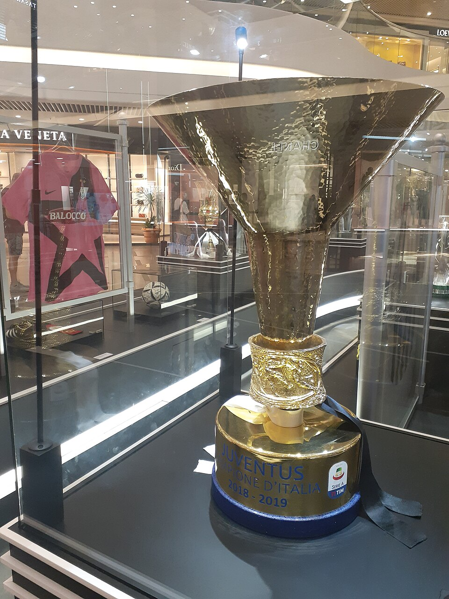

Poucos campeonatos carregam uma identidade tão própria quanto o Campeonato Italiano. Construiu sua reputação com clubes gigantes, rivalidades centenárias, treinadores influentes e jogadores que ajudaram a transformar o futebol europeu ao longo de diferentes gerações.
A competição também representa as diferenças culturais e regionais da Itália. O poder econômico e esportivo do norte convive com a paixão de cidades do centro e do sul, criando um campeonato no qual os resultados frequentemente ganham significados que ultrapassam a tabela.
Mais do que uma liga nacional, a Serie A é uma das bases da cultura esportiva da Itália e continua entre os campeonatos mais tradicionais do futebol mundial.
Como nasceu a competição
O primeiro Campeonato Italiano foi disputado em 1898. A edição inaugural aconteceu em Turim, teve duração de apenas um dia e terminou com o título do Genoa, clube que dominaria os primeiros anos da competição.
Durante décadas, o torneio passou por diferentes formatos, com grupos regionais e fases nacionais. A mudança decisiva ocorreu em 1929/30, quando o campeonato adotou pela primeira vez o sistema de grupo único, reunindo os principais clubes em uma tabela nacional com jogos ao longo da temporada.
A campeã da primeira edição nesse formato foi a Inter, que na época utilizava o nome Ambrosiana. A equipe tinha Giuseppe Meazza como principal referência ofensiva e confirmou o título na penúltima rodada ao derrotar a Juventus por 2 a 0. Meazza terminou aquela campanha com 31 gols em 33 partidas.
Essa reorganização aproximou o campeonato da estrutura mantida até hoje. A partir daquele momento, clubes de diferentes regiões passaram a disputar regularmente a mesma competição, fortalecendo rivalidades nacionais e ampliando a importância econômica e cultural do torneio.
O formato
A Serie A é disputada por 20 clubes em sistema de pontos corridos. Cada equipe enfrenta os outros 19 participantes duas vezes, uma em casa e outra fora.
Os três últimos colocados são rebaixados para a Serie B e substituídos por três equipes vindas da segunda divisão.
A quantidade de vagas europeias pode variar de acordo com o desempenho dos clubes italianos nas competições da Uefa e com a distribuição definida para cada temporada. A classificação nacional normalmente determina os representantes do país na Champions League, Europa League e Conference League.
O scudetto e seu significado
A palavra significa “pequeno escudo” em italiano. Ela identifica o emblema com as cores verde, branca e vermelha da bandeira nacional que o campeão passa a utilizar na camisa durante a temporada seguinte.
A tradição começou na década de 1920. Em 1924, a assembleia da Federação Italiana decidiu que a equipe campeã deveria exibir o escudo tricolor no uniforme. O Genoa, vencedor da temporada anterior, tornou-se o primeiro clube a entrar em campo com o símbolo, em outubro daquele ano.
A origem do desenho é associada a Gabriele D’Annunzio. Em 1920, o poeta teria utilizado um distintivo tricolor em uma equipe militar italiana durante uma partida realizada em Fiume, atual Rijeka, na Croácia. A ideia foi posteriormente incorporada ao futebol nacional.
O primeiro scudetto apresentava o escudo da Casa de Saboia na parte branca. O desenho passou por alterações políticas e institucionais até chegar ao formato tricolor utilizado atualmente. Depois da Segunda Guerra Mundial, o emblema voltou a representar exclusivamente as cores da bandeira italiana.
Com o tempo, a palavra deixou de designar somente o distintivo. “Conquistar o scudetto” virou sinônimo de vencer o Campeonato Italiano.
A diferença entre a taça da Serie A
O scudetto não é o troféu físico entregue ao campeão. Ele é o símbolo que será usado na camisa durante a temporada seguinte.
A taça oficial é chamada de Coppa Campioni d’Italia. Criada em 1960 pelo escultor e medalhista Ettore Calvelli, ela começou a ser entregue na temporada 1960/61. A Juventus foi a primeira equipe a recebê-la.
Os nomes dos campeões são gravados na peça, preservando a sequência histórica das conquistas desde sua criação.
Essa diferença ajuda a entender a linguagem do futebol italiano: o clube levanta a Coppa Campioni d’Italia, mas conquista o scudetto e passa a usar o escudo tricolor no uniforme.
Os maiores campeões
A contagem oficial considera todos os campeonatos nacionais reconhecidos pela Federação Italiana desde 1898, incluindo as edições anteriores à criação da Serie A em grupo único.
São os times:
- Juventus — 36 títulos
- Inter — 21 títulos
- Milan — 19 títulos
- Genoa — 9 títulos
- Bologna — 7 títulos
- Torino — 7 títulos
- Pro Vercelli — 7 títulos
- Napoli — 4 títulos
- Roma — 3 títulos
- Fiorentina — 2 títulos
- Lazio — 2 títulos
- Cagliari — 1 título
- Casale — 1 título
- Hellas Verona — 1 título
- Novese — 1 título
- Sampdoria — 1 título
- Atual campeã: Inter, vencedora da temporada 2025/26
A lista mostra duas histórias diferentes dentro da mesma competição. Genoa e Pro Vercelli, por exemplo, construíram grande parte de seus títulos antes da criação do grupo único. Juventus, Inter e Milan ampliaram seu domínio principalmente após a profissionalização e a consolidação nacional do campeonato.
O Campeonato de 2025/26
Com a conquista, Inter confirmou seu 21º título italiano. Comandada por Cristian Chivu, a equipe assegurou matematicamente ao derrotar o Parma por 2 a 0 no San Siro, com três rodadas de antecedência.
Foi o segundo scudetto da Inter em três temporadas. A campanha teve como principal característica a força ofensiva: os nerazzurri terminaram as 38 rodadas com 89 gols, o maior número do clube em uma edição da Serie A nos cinco anos anteriores.
Lautaro Martínez foi o artilheiro do campeonato, com 17 gols, e também teve participação importante como capitão e referência técnica. Federico Dimarco foi outro protagonista, contribuindo na construção ofensiva e na criação de oportunidades.
O título ainda marcou a primeira temporada de Chivu no comando da equipe principal da Inter. O treinador assumiu depois de uma passagem pelo Parma e conseguiu transformar a produção ofensiva em regularidade suficiente para decidir o campeonato antes das rodadas finais.
Os campeões mais recentes
O domínio da Juventus foi sucedido por um período de maior alternância. Entre 2020/21 e 2025/26, Inter, Milan e Napoli dividiram todos os títulos.
Campeões nas últimas temporadas:
- 2019/20 — Juventus
- 2020/21 — Inter
- 2021/22 — Milan
- 2022/23 — Napoli
- 2023/24 — Inter
- 2024/25 — Napoli
- 2025/26 — Inter
A sequência mostra uma mudança importante no equilíbrio da liga. Depois de nove títulos consecutivos da Juventus, a Serie A passou a ter três campeões diferentes em seis temporadas.
O maior domínio da história italiana
A "Velha Senhora" é a maior campeã do futebol italiano, com 36 títulos reconhecidos. Nenhum outro clube apresentou o mesmo nível de regularidade doméstica ao longo de tantos períodos diferentes.
A fase mais dominante começou em 2011/12. A equipe conquistou nove campeonatos consecutivos, sequência encerrada apenas em 2020/21.
Títulos da sequência da Juventus:
- 2011/12
- 2012/13
- 2013/14
- 2014/15
- 2015/16
- 2016/17
- 2017/18
- 2018/19
- 2019/20
Durante esse período, a Juventus venceu com diferentes treinadores e características. Antonio Conte iniciou a reconstrução, Massimiliano Allegri ampliou o domínio e Maurizio Sarri comandou a equipe na última conquista da sequência.
O título de 2019/20 permanece como o mais recente. Desde então, Inter, Milan e Napoli assumiram o protagonismo da disputa.
Os técnicos mas vitoriosos
A história do Campeonato Italiano também foi construída por treinadores que atravessaram diferentes gerações e transformaram grandes elencos em equipes dominantes.
Técnicos com mais scudetti:
- Giovanni Trapattoni — 7 títulos
Juventus: 1976/77, 1977/78, 1980/81, 1981/82, 1983/84 e 1985/86
Inter: 1988/89 - Massimiliano Allegri — 6 títulos
Milan: 2010/11
Juventus: 2014/15, 2015/16, 2016/17, 2017/18 e 2018/19 - Fabio Capello — 5 títulos
Milan: 1991/92, 1992/93, 1993/94 e 1995/96
Roma: 2000/01 - Marcello Lippi — 5 títulos
Juventus: 1994/95, 1996/97, 1997/98, 2001/02 e 2002/03 - Antonio Conte — 5 títulos
Juventus: 2011/12, 2012/13 e 2013/14
Inter: 2020/21
Napoli: 2024/25
Trapattoni é o único da lista que conquistou sete scudetti e também venceu a competição por Juventus e Inter. Conte, por sua vez, tornou-se campeão por três clubes diferentes, mostrando capacidade de construir equipes vencedoras em contextos distintos. Allegri marcou a fase mais dominante da Juventus na década de 2010, enquanto Capello e Lippi comandaram alguns dos times mais fortes da história moderna da liga.
O centro de poder
Inter e Milan formam, ao lado da Juventus, o núcleo mais vitorioso do futebol italiano. Os dois clubes dividem o San Siro e ajudaram a transformar Milão em uma das cidades mais importantes da história do esporte.
A Inter chegou ao 21º scudetto em 2025/26. O clube também marcou épocas com o time de Helenio Herrera nos anos 1960, a equipe de Giovanni Trapattoni em 1988/89, a sequência de títulos dos anos 2000 e a Tríplice Coroa conquistada com José Mourinho em 2009/10.
O Milan com 19 títulos, tendo sua história está ligada a equipes que transformaram o futebol europeu, especialmente durante os ciclos comandados por Arrigo Sacchi e Fabio Capello. O último scudetto rossonero foi conquistado em 2021/22, sob a direção de Stefano Pioli.
A força do sul da Itália
O Napoli conquistou quatro títulos italianos e representa um contraponto ao poder historicamente concentrado no norte do país.
Títulos Napolitanos:
- 1986/87
- 1989/90
- 2022/23
- 2024/25
Os dois primeiros foram liderados por Diego Maradona. Mais do que transformar o Napoli em campeão, o argentino virou símbolo de uma cidade que enxergava o futebol como afirmação diante dos centros mais ricos do país.
O terceiro título encerrou uma espera de 33 anos. Na temporada 2022/23, o time comandado por Luciano Spalletti dominou o campeonato com um futebol ofensivo e teve Victor Osimhen e Khvicha Kvaratskhelia entre seus principais jogadores.
A quarta conquista veio em 2024/25, com Antonio Conte. O resultado confirmou o Napoli como uma força capaz de disputar o campeonato de maneira recorrente, e não apenas como protagonista de períodos isolados.
O peso da capital
Roma e Lazio transformam a capital italiana em outro eixo central da competição.
A Roma foi campeã em três oportunidades:
- 1941/42
- 1982/83
- 2000/01
O título de 2000/01 é um dos mais lembrados da era moderna. Comandada por Fabio Capello, a equipe tinha Francesco Totti como símbolo, além de Gabriel Batistuta, Cafu, Vincenzo Montella e Walter Samuel.
A Lazio possui dois títulos:
- 1973/74
- 1999/2000
A última conquista aconteceu durante uma das fases mais fortes da história do clube, com um elenco que reunia Alessandro Nesta, Pavel Nedvěd, Juan Sebastián Verón, Diego Simeone, Marcelo Salas e Siniša Mihajlović.
Quando Roma e Lazio se enfrentam, o Derby della Capitale transforma o Estádio Olímpico em um dos ambientes mais tensos do futebol europeu.
Campeões que desafiaram as potências
A história do Campeonato Italiano também foi marcada por equipes que quebraram a concentração de títulos entre os clubes mais poderosos.
O Cagliari foi campeão em 1969/70, liderado por Gigi Riva. A conquista levou o scudetto pela primeira vez à Sardenha e permanece como o maior título da história do clube.
O Hellas Verona surpreendeu o país em 1984/85. Comandada por Osvaldo Bagnoli, a equipe superou clubes com maior capacidade financeira e conquistou seu único campeonato italiano.
A Sampdoria venceu em 1990/91. A equipe de Vujadin Boškov tinha Gianluca Vialli e Roberto Mancini como referências ofensivas e terminou à frente de Milan, Inter e Juventus.
Esses títulos ganharam importância porque aconteceram em períodos de grande força econômica da Serie A, quando o campeonato reunia vários dos melhores jogadores do mundo.
Rivalidades que sustentam a identidade
O Campeonato Italiano é movido por clássicos nacionais, locais e regionais.
O Derby della Madonnina coloca Milan e Inter frente a frente no mesmo estádio. O nome faz referência à estátua da Virgem Maria localizada no alto da Catedral de Milão e reforça a ligação do confronto com a cidade.
Inter e Juventus protagonizam o Derby d’Italia. A rivalidade reúne os dois clubes com mais títulos italianos e foi alimentada por disputas esportivas, decisões administrativas e diferentes ciclos de poder.
Outros grandes dérbis da Serie A:
- Roma x Lazio — Derby della Capitale
- Juventus x Torino — Derby della Mole
- Genoa x Sampdoria — Derby della Lanterna
- Inter x Milan — Derby della Madonnina
- Bologna x Fiorentina — Derby dell’Appennino
Também existe uma rivalidade histórica entre o Napoli e as principais forças do norte. Embora nem sempre seja tratada como um dérbi formal, ela representa diferenças econômicas, sociais e culturais que fazem parte da formação da Itália.
A fama tática
Durante muito tempo, o Campeonato Italiano foi associado ao jogo defensivo, à organização e à leitura estratégica. Essa fama não significa que todos os times adotassem a mesma proposta, mas mostra a importância que o país deu ao trabalho dos treinadores.
O catenaccio se tornou a expressão mais conhecida desse passado. O sistema valorizava cobertura, proteção da área, disciplina posicional e transições rápidas. Com o tempo, porém, o futebol italiano incorporou novas ideias e produziu equipes ofensivas, agressivas na pressão e capazes de controlar a posse de bola.
Treinadores como Vittorio Pozzo, Nereo Rocco, Helenio Herrera, Arrigo Sacchi, Fabio Capello, Marcello Lippi, Carlo Ancelotti, Antonio Conte, Massimiliano Allegri e Gian Piero Gasperini representaram diferentes escolas.
Sacchi, por exemplo, ficou conhecido por transformar o Milan com pressão coletiva, linha defensiva organizada e ocupação compacta dos espaços. Conte se destacou pela intensidade, pelos movimentos coordenados e pela utilização de sistemas com três defensores. Gasperini desenvolveu um modelo de marcação individual por setor e grande agressividade ofensiva.
Por isso, reduzir a Serie A a um campeonato defensivo seria ignorar sua evolução. A característica mais duradoura da liga é a atenção aos detalhes e a capacidade de adaptar o plano de jogo ao adversário.
A força financeira
A liga continua entre as cinco maiores ligas europeias em faturamento, embora esteja distante da Premier League e também enfrente limitações relacionadas aos estádios, aos direitos de transmissão e ao endividamento de alguns clubes.
Os números consolidados mais recentes correspondem à temporada 2024/25. Naquele período, os 20 clubes da Serie A geraram aproximadamente €3 bilhões em receitas, crescimento de 4% em relação ao exercício anterior.
Principais receitas em 2024/25:
- Direitos de transmissão e distribuições esportivas — €1,5 bilhão
- Receitas comerciais — €1 bilhão
- Bilheteria e dias de jogo — €500 milhões
Juventus, Inter e Milan responderam por aproximadamente 45% de toda a receita do campeonato. A concentração mostra a diferença entre os maiores clubes e boa parte dos demais participantes.
Os gastos salariais chegaram a cerca de €2 bilhões, equivalentes a 66% das receitas. A liga apresentou lucro operacional conjunto de apenas €9 milhões e prejuízo antes de impostos próximo de €300 milhões, mesmo com uma redução das perdas em comparação com a temporada anterior.
Os números completos de 2025/26 dependem da publicação posterior dos balanços de todos os clubes.
Distribuição das receitas
Os direitos de transmissão domésticos da Serie A foram vendidos para DAZN e Sky em um acordo válido de 2024/25 até 2028/29.
O contrato movimenta aproximadamente €900 milhões por temporada. A DAZN transmite todos os jogos, enquanto a Sky possui uma parte das partidas em regime de compartilhamento.
A comercialização é centralizada pela liga. Metade da receita é dividida igualmente entre os 20 clubes, enquanto o restante considera elementos como desempenho esportivo, histórico, audiência e presença da torcida.
Esse sistema busca garantir uma base financeira para todos os participantes sem eliminar completamente a recompensa para os clubes de maior desempenho e alcance comercial.
Quanto o campeão recebe
A Serie A não entrega ao campeão um prêmio único e isolado apenas pela conquista do scudetto. A remuneração faz parte de um conjunto mais amplo de repasses centrais.
O valor recebido por um clube reúne:
- Parcela igualitária dos direitos de transmissão
- Cota relacionada à classificação
- Desempenho em temporadas anteriores
- Histórico esportivo
- Audiência televisiva
- Presença e engajamento da torcida
- Receitas internacionais distribuídas pela liga
A Inter recebeu a maior parcela relacionada à posição final em 2025/26, mas o valor completo não pode ser tratado simplesmente como “prêmio pelo título”. A receita total do clube ainda inclui bilheteria, patrocínios próprios, venda de produtos, negociações de jogadores e premiações das competições da Uefa.
Controle financeiro e fair play
Os clubes italianos precisam cumprir requisitos econômicos para participar das competições nacionais e obter as licenças necessárias. A análise considera pagamento de salários, impostos, dívidas esportivas e capacidade de manter as operações durante a temporada.
As equipes classificadas para as competições europeias também estão submetidas às regras de sustentabilidade financeira da Uefa.
Desde 2025/26, a regra de custo do elenco limita a 70% das receitas consideradas os gastos com:
- Salários de jogadores e treinadores
- Amortização de transferências
- Empréstimos de atletas
- Comissões de agentes e intermediários
O objetivo é aproximar os investimentos esportivos da capacidade real de arrecadação. Violações podem resultar em multas, restrições para inscrição de jogadores e outras sanções esportivas.
Uma liga acompanhada no mundo inteiro
A Serie A possui um alcance internacional construído ao longo de décadas. O auge esportivo das décadas de 1980 e 1990, a presença de craques estrangeiros e a tradição de clubes como Juventus, Inter e Milan transformaram o campeonato em um produto global.
Em ciclos recentes de transmissão, a liga informou que suas partidas chegaram a mais de 200 países por meio de dezenas de emissoras e plataformas. O alcance potencial foi estimado em mais de um bilhão de pessoas.
A distribuição internacional aumenta o valor de patrocínios e permite que os clubes mantenham torcidas relevantes fora da Itália. América Latina, Estados Unidos, Oriente Médio, Ásia, África e diferentes partes da Europa são mercados importantes para o campeonato.
A Serie A também investiu na criação de um centro internacional de produção, em conteúdos digitais, transmissões em alta definição e ações direcionadas a públicos de diferentes países.
O desafio da modernização
A Itália possui estádios reconhecidos mundialmente, como San Siro, Olímpico de Roma, Diego Armando Maradona, Artemio Franchi e Luigi Ferraris.
Muitos desses locais, porém, foram construídos ou reformados há várias décadas e pertencem aos municípios. Isso limita a capacidade dos clubes de explorar eventos, áreas comerciais, hospitalidade e receitas fora dos dias de jogo.
A modernização dos estádios é uma das principais discussões econômicas da Serie A. Arenas próprias permitem maior arrecadação com camarotes, restaurantes, museus, lojas, eventos corporativos e experiências para os torcedores.
A Juventus ganhou vantagem nesse processo ao inaugurar seu estádio próprio em 2011. Outros clubes passaram a desenvolver projetos, mas questões burocráticas, patrimoniais e políticas frequentemente atrasam as obras.
A Serie A e o mata-mata
Além do campeonato por pontos corridos, os clubes disputam a Coppa Italia, principal torneio eliminatório do país.
A competição possui uma lógica diferente: enquanto a Serie A recompensa regularidade durante 38 rodadas, a copa exige eficiência em confrontos de mata-mata. A conquista ainda garante ao vencedor uma vaga nas competições europeias, de acordo com as regras de classificação da temporada.
Por que o Campeonato Italiano continua relevante
A Serie A permanece entre as principais ligas do mundo porque combina elementos difíceis de reproduzir: clubes centenários, rivalidades orgânicas, escolas táticas influentes, títulos europeus e uma ligação profunda entre futebol, cidades e regiões.
A competição atravessou períodos de enorme riqueza, crises financeiras, escândalos, reformas e mudanças de formato. Mesmo assim, preservou sua capacidade de produzir equipes competitivas e narrativas de alcance mundial.
O cenário recente também trouxe maior alternância. Depois de nove títulos consecutivos da Juventus, Inter, Milan e Napoli voltaram a dividir o topo. Enquanto clubes como Atalanta, Roma, Napoli, Milan e Juventus mantiveram presença importante nas competições europeias.
Para quem acompanha os diferentes modelos do futebol do continente europeu, a comparação com a história, a hegemonia do Bayern na Bundesliga mostra caminhos distintos. A Alemanha se destaca pela participação dos associados e pelos estádios cheios, enquanto a Itália construiu sua força sobre rivalidades regionais, tradição tática e clubes que marcaram a história europeia.
No fim, o Campeonato Italiano continua relevante porque o scudetto representa mais do que uma posição na tabela. Ele carrega a identidade de uma cidade, o peso de uma camisa, a memória de diferentes gerações e o direito de exibir durante uma temporada o pequeno escudo tricolor que identifica o campeão da Itália.